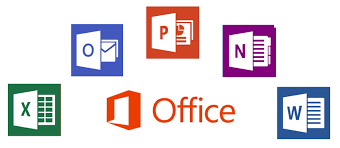
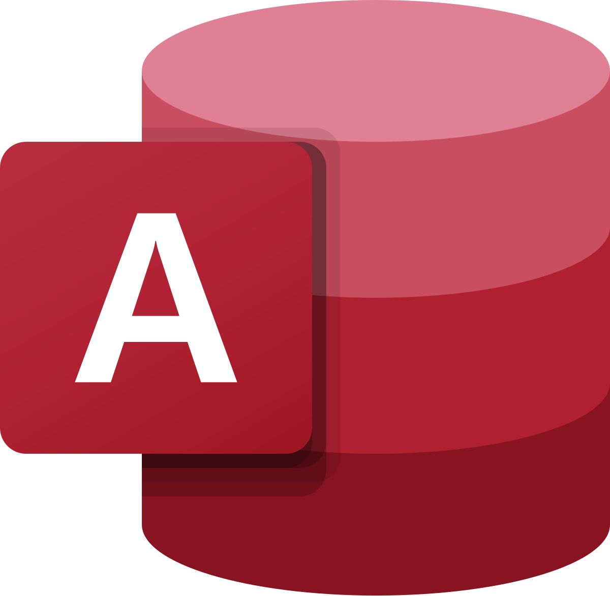

Las herramientas ofimáticas son programas informáticos diseñados para optimizar tareas de oficina como crear documentos, gestionar hojas de cálculo, elaborar presentaciones, administrar bases de datos y gestionar el correo electrónico. En esencia, la ofimática es el conjunto de técnicas y herramientas que facilitan la automatización y mejora de las funciones de oficina utilizando tecnología informática.
|  |
Las herramientas ofimáticas son esenciales para la productividad en entornos de oficina y se utilizan en una amplia gama de industrias y organizaciones. Además, muchas de estas herramientas se encuentran disponibles en la nube, lo que facilita el acceso y la colaboración en tiempo real desde cualquier dispositivo.
Microsoft Word es un programa de procesamiento de textos que forma parte de la suite de Microsoft Office. Permite crear, editar y dar formato a documentos de texto, como cartas, informes, trabajos académicos y más. Es una herramienta versátil tanto para uso personal como profesional, ofreciendo funciones para dar formato al texto, insertar imágenes, gráficos, tablas, y realizar revisiones ortográficas y gramaticales.

|
🔶 Creación de documentos:
Word permite empezar desde cero o utilizando plantillas prediseñadas para diferentes tipos de documentos.
🔶 Edición de texto:
Ofrece opciones para cambiar la fuente, tamaño, color y estilo del texto, así como para aplicar formato al párrafo.
🔶 Multimedia:
Se pueden insertar imágenes, gráficos, tablas y otros elementos visuales para enriquecer el contenido del documento.
🔶 Revisión y colaboración:
Word incluye herramientas para revisar la ortografía y gramática, así como para colaborar con otros usuarios en la edición de documentos
Excel es un programa de hoja de cálculo desarrollado por Microsoft que permite a los usuarios organizar, analizar y manipular datos en filas y columnas, utilizando fórmulas y funciones para realizar cálculos, crear gráficos y tablas dinámicas. Es una herramienta versátil usada en diversos campos, desde finanzas hasta administración de datos, para realizar tareas como entrada de datos, gestión de datos, contabilidad, análisis financiero, entre otros.

|
🔶 Organización de datos:
Excel organiza la información en celdas que se agrupan en filas y columnas, formando una cuadrícula.
🔶 Cálculos y fórmulas:
Permite realizar cálculos complejos utilizando fórmulas y funciones, lo que facilita la manipulación de datos y la obtención de resultados.
🔶 Gráficos y tablas:
Excel ofrece herramientas para crear gráficos y tablas dinámicas, que permiten visualizar los datos de manera más clara y efectiva.
🔶 Funciones:
Dispone de una amplia variedad de funciones predefinidas para realizar cálculos matemáticos, estadísticos, lógicos, entre otros.
🔶 Aplicaciones:
Excel se utiliza en una variedad de campos, incluyendo finanzas, contabilidad, análisis de datos, gestión de proyectos, y más.
Es una herramienta de implementación y diseño de aplicaciones de base de datos que puede usar para realizar un seguimiento de información importante. Puede conservar los datos en el equipo o publicar en la Web para que otros usuarios puedan usar la base de datos con un explorador web.or supuesto
|  |
♦️ Interfaz amigable:
Su entorno gráfico intuitivo facilita la creación y gestión de bases de datos, incluso para usuarios sin experiencia en programación.
♦️ Creación de tablas:
Permite diseñar tablas con campos y tipos de datos específicos para almacenar la información de manera estructurada.
♦️ Consultas:
Access ofrece herramientas para crear consultas que permiten filtrar, ordenar y analizar datos de manera flexible.
♦️ Formularios:
Facilita la creación de interfaces visuales para la introducción, visualización y edición de datos.
♦️Informes:
Permite generar informes personalizados para presentar la información de manera organizada y visualmente atractiva.
♦️ Automatización con macros:
Se pueden crear macros para automatizar tareas repetitivas, como la generación de informes o la importación/exportación de datos.
El lenguaje de marcado de hipertexto (HTML) es el estándar para describir la estructura de los documentos que se muestran en la Web. HTML consiste en una serie de elementos y atributos que se usan para marcar todos los componentes de un documento para estructurarlo de manera significativa.
♦️ Interfaz amigable:
Su entorno gráfico intuitivo facilita la creación y gestión de bases de datos, incluso para usuarios sin experiencia en programación.
♦️ Creación de tablas:
Permite diseñar tablas con campos y tipos de datos específicos para almacenar la información de manera estructurada.
♦️ Consultas:
Access ofrece herramientas para crear consultas que permiten filtrar, ordenar y analizar datos de manera flexible.
♦️ Formularios:
Facilita la creación de interfaces visuales para la introducción, visualización y edición de datos.
♦️Informes:
Permite generar informes personalizados para presentar la información de manera organizada y visualmente atractiva.
♦️ Automatización con macros:
Se pueden crear macros para automatizar tareas repetitivas, como la generación de informes o la importación/exportación de datos.

|

|

|